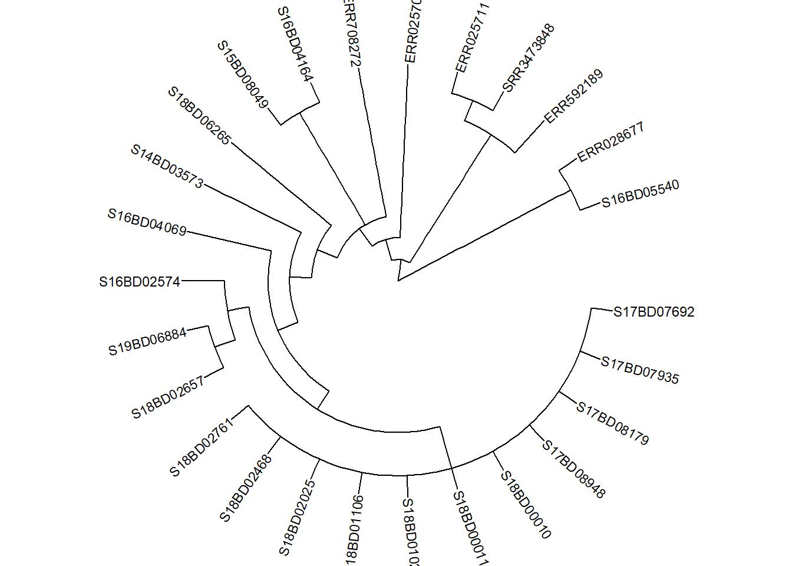
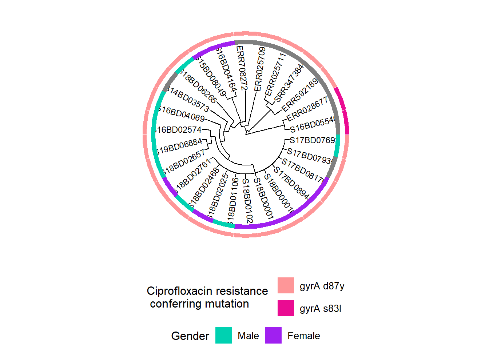

39 Les arbres phylogénétiques
39.1 Aperçu
Les arbres phylogénétiques sont utilisés pour visualiser et décrire la parenté et l’évolution des organismes à partir de la séquence de leur code génétique.
On peut les construire à partir de séquences génétiques en utilisant des méthodes basées sur la distance (comme la méthode neighbor-joining) ou les méthodes probabiliste (comme la méthode de maximum de vraisemblance et la méthode Bayesian Markov Chain Monte Carlo). Le séquençage de nouvelle génération (NGS) devient de plus en plus abordable et populaire en santé publique pour caractériser des agents pathogènes à l’origine des maladies infectieuses. Les appareils de séquençage portables réduisent le délai d’exécution et offrent la possibilité de rendre les résultats disponible en temps réel pour les enquêtes sur les épidémies. Les données NGS peuvent être utilisées pour identifier l’origine ou la source d’une souche épidémique ainsi que sa propagation, et pour déterminer la présence de gènes de résistance antimicrobienne. Pour visualiser la parenté génétique entre les échantillons, un arbre phylogénétique est construit.
Dans cette page, nous allons apprendre à utiliser le package ggtree, qui permet la visualisation combinée d’arbres phylogénétiques avec des données d’échantillons supplémentaires sous la forme de tableaux de données. Cela nous permettra d’observer les tendances et de comprendre la dynamique de l’épidémie.

39.2 Préparation
Importation des packages
Ces lignes de code importe les packages necessaire pour l’analyse. Dans ce guide, nous mettons l’accent sur p_load() de pacman, qui installe le package si nécessaire puis l’importe pour l’utiliser dans la session de Rstudio. Vous pouvez également charger les packages installés avec library() de base R. Voir la page sur bases de R pour plus d’informations sur les packages en R.
pacman::p_load(
rio, # import/export
here, # gestion des chemins d'accès
tidyverse, # gestion des données + graphiques (ggplot2)
ape, # pour importer and exporter les fichiers phylogénétiques
ggtree, # pour visualiser les fichiers phylogénétiques
treeio, # pour visualiser les fichiers phylogénétiques
ggnewscale) # pour ajouter les palettes de couleurs supplémentaireImport data
Les données pour cette page peuvent être téléchargées suivant les instructions de la page Télécharger le manuel et les données.
Il existe plusieurs formats différents dans lesquels un arbre phylogénétique peut être enregistré (par exemple, Newick, NEXUS, Phylip). Un format couramment utilisés est celui des fichiers Newick (.nwk), qui est la norme pour représenter les arbres sous une forme facilement exploitable par ordinateur. Cela signifie qu’un arbre entier peut être représenté par un format de chaîne de caractères tel que “((t2:0.04,t1:0.34):0.89,(t5:0.37,(t4:0.03,t3:0.67):0.9):0.59) ;”, énumérant tous les nœuds, les extrémités et leur relation (longueur de branche) les uns avec les autres.
Note : Il est important de comprendre que le fichier de l’arbre phylogénétique en lui-même ne contient pas de données de séquençage, mais est simplement le résultat des distances génétiques entre les séquences. Nous ne pouvons donc pas extraire les données de séquençage d’un fichier arbre.
Tout d’abord, nous utilisons la fonction read.tree() du package ape pour importer un fichier d’arbre phylogénétique de Newick au format .txt, et le enregistrer dans un objet liste de classe “phylo”. Si nécessaire, utilisez la fonction here() du package here pour spécifier le chemin relatif du fichier.
Note : Dans ce cas, l’arbre Newick est enregistré au format .txt pour faciliter sa manipulation et son téléchargement de Github.
tree <- ape::read.tree("Shigella_tree.txt")Nous inspectons notre objet arbre et voyons qu’il contient 299 pointes (ou échantillons) et 236 nœuds.
tree##
## Phylogenetic tree with 299 tips and 236 internal nodes.
##
## Tip labels:
## SRR5006072, SRR4192106, S18BD07865, S18BD00489, S17BD08906, S17BD05939, ...
## Node labels:
## 17, 29, 100, 67, 100, 100, ...
##
## Rooted; includes branch lengths.Ensuite, nous importons un fichier en format .csv contenant des informations supplémentaires pour chaque échantillon séquencé, tel que le sexe, le pays d’origine et les attributs de résistance antimicrobienne, en utilisant la fonction import() du package rio :
sample_data <- import("sample_data_Shigella_tree.csv")Ci-dessous, vous trouverez les 50 premières lignes de données :
Nettoyer et inspecter
Nous nettoyons et inspectons nos données : Pour pouvoir associer les données échantillon à l’arbre phylogénétique, les valeurs de la colonne Sample_ID dans le tableau de données sample_data doit correspondre aux valeurs tip.labels dans le fichier tree :
Nous vérifions le format du tip.labels dans le fichier tree en regardant les 6 premières entrées en utilisant head() de base R.
head(tree$tip.label) ## [1] "SRR5006072" "SRR4192106" "S18BD07865" "S18BD00489" "S17BD08906" "S17BD05939"Nous nous assurons également que la première colonne de notre tableau de données sample_data est Sample_ID. Nous regardons les noms des colonnes de notre jeu de données en utilisant colnames() de base R.
colnames(sample_data) ## [1] "Sample_ID" "serotype" "Country" "Continent"
## [5] "Travel_history" "Year" "Belgium" "Source"
## [9] "Gender" "gyrA_mutations" "macrolide_resistance_genes" "MIC_AZM"
## [13] "MIC_CIP"Nous regardons les Sample_IDs dans le jeu de données pour nous assurer que le format est le même que dans le tip.label (par exemple, les lettres sont en majuscules, pas de soulignement supplémentaire _ entre les lettres et les chiffres, etc.)
head(sample_data$Sample_ID) # Nous vérifions les 6 premières entrées en utilisant head()## [1] "S17BD05944" "S15BD07413" "S18BD07247" "S19BD07384" "S18BD07338" "S18BD02657"Nous pouvons aussi vérifier si tous les échantillons sont présents dans le fichier tree et vice versa en générant un vecteur logique de VRAI ou FAUX là où ils correspondent ou non. Ceux-ci ne sont pas imprimés ici, pour plus de simplicité.
sample_data$Sample_ID %in% tree$tip.label
tree$tip.label %in% sample_data$Sample_IDNous pouvons utiliser ces vecteurs pour démontrer les ID des échantillons qui ne sont pas sur l’arbre (il n’y en a pas).
sample_data$Sample_ID[!tree$tip.label %in% sample_data$Sample_ID]## character(0)Après inspection, nous pouvons voir que le format de Sample_ID dans le dataframe correspond au format des noms d’échantillons dans le tip.labels. Ceux-ci n’ont pas besoin d’être triés dans le même ordre pour être appariés.
Voilà on est prêts à partir !
39.3 Visualisation simple de l’arbre
Diverses configurations d’arbres
ggtree offre nombreux formats de configuration d’arbres différents et certains peuvent être plus adéquats que d’autres pour votre usage spécifique. Ci-dessous, vous trouverez quelques illustrations. Pour d’autres options, voir ce livre en ligne.
Voici quelques exemples des configurations d’arbres :
ggtree(tree) # arbre linéaire simple
ggtree(tree, branch.length = "none") # arbre linéaire simple avec toutes les pointes alignées
ggtree(tree, layout="circular") # arbre circulaire simple
ggtree(tree, layout="circular", branch.length = "none") # arbre circulaire simple avec toutes les pointes alignées 


Arbre simple plus données échantillons
L’opérateur %<+% est utilisé pour connecter le tableau de donnees sample_data avec le fichier arbre. L’annotation la plus facile de votre arbre est l’ajout des noms des échantillons aux extrémités, ainsi que la coloration des points d’extrémité et si désiré des branches :
Voici un exemple d’arbre circulaire :
ggtree(tree, layout = "circular", branch.length = 'none') %<+% sample_data + # %<+% ajoute le tableau des données l'échantillon à l'arbre
aes(color = (Belgium))+ # colore les branches en fonction d'une variable de votre tableau de données
scale_color_manual(
name = "Sample Origin", # le nom de votre palette de couleurs (qui apparaîtra dans la légende comme ceci)
breaks = c("Yes", "No"), # les différentes options de votre variable
labels = c("NRCSS Belgium", "Other"), # comment vous voulez que les différentes options soient nommées dans votre légende, ce qui permet de les formater
values = c("blue", "black"), # la couleur que vous voulez attribuer à la variable
na.value = "black") + # colorer les valeurs NA en noir également
new_scale_color()+ # permet d'ajouter une couleur supplémentaire pour une autre variable
geom_tippoint(
mapping = aes(color = Continent), # colorer les pointes par continent. Vous pouvez changer la forme en ajoutant "shape = "
size = 1.5)+ # Définit la taille du point à la extremite
scale_color_brewer(
name = "Continent", # nom de votre palette de couleurs (qui apparaîtra dans la légende comme ceci)
palette = "Set1", # nous choisissons un ensemble de couleurs fournies avec le package brewer
na.value = "grey") + # pour les valeurs NA nous choisissons la couleur grise
geom_tiplab( # ajoute le nom de l'échantillon à l'extrémité de sa branche
color = 'black', # (ajoutez autant de lignes de texte que vous souhaitez avec + , mais vous devrez ajuster la valeur du décalage pour les placer les à côté des autres)
offset = 1,
size = 1,
geom = "text",
align = TRUE) +
ggtitle("Phylogenetic tree of Shigella sonnei")+ # titre de votre graphique
theme(
axis.title.x = element_blank(), # supprime le titre de l'axe x
axis.title.y = element_blank(), # supprime le titre de l'axe y
legend.title = element_text( # définit la taille de la police et le format du titre de la légende
face = "bold",
size = 12),
legend.text=element_text( # définit la taille de la police et le format du texte de la légende
face = "bold",
size = 10),
plot.title = element_text( # définit la taille de la police et le format du titre du graphique
size = 12,
face = "bold"),
legend.position = "bottom", # # définit le position du légende
legend.box = "vertical", # # définit le position du légende
legend.margin = margin()) 
Vous pouvez exporter le graphique de votre arbre avec ggsave() comme vous le feriez avec n’importe quel autre objet ggplot. Écrit de cette façon, ggsave() enregistre la dernière image produite dans le chemin de fichier que vous spécifiez. Rappelez-vous que vous pouvez utiliser here() et les chemins de fichiers relatifs pour sauvegarder facilement dans des sous-dossiers, etc.
ggsave("example_tree_circular_1.png", width = 12, height = 14)39.4 Manipulation de l’arbre
Parfois, vous pouvez avoir un très grand arbre phylogénétique et vous n’êtes intéressé que par une partie de l’arbre. Par exemple, si vous avez produit un arbre incluant des échantillons historiques ou internationaux afin d’obtenir un aperçu de la place de l’ensemble de vos données dans le schema général. Mais ensuite, pour examiner vos données de plus près, vous ne voulez inspecter que cette partie du grand arbre.
Comme le fichier de l’arbre phylogénétique n’est que le résultat de l’analyse des données de séquençage, nous ne pouvons pas manipuler l’ordre des nœuds et des branches dans le fichier lui-même. Ceux-ci ont déjà été déterminés dans une analyse précédente à partir des données de séquençage brutes. Nous sommes cependant en mesure de zoomer sur certaines parties, de cacher certaines parties et même de sous-ensembler une partie de l’arbre.
Zoomer pour agrandir
Si vous ne voulez pas “couper” votre arbre, mais seulement en inspecter une partie de plus près, vous pouvez zoomer pour voir une partie spécifique.
Tout d’abord, nous traçons l’arbre entier au format linéaire et ajoutons des étiquettes numériques à chaque nœud de l’arbre.
p <- ggtree(tree,) %<+% sample_data +
geom_tiplab(size = 1.5) + # étiquette les extrémités de toutes les branches avec le nom de l'échantillon dans le fichier de l'arbre
geom_text2(
mapping = aes(subset = !isTip,
label = node),
size = 5,
color = "darkred",
hjust = 1,
vjust = 1) # étiquette tous les nœuds de l'arbre
p # imprime
Pour zoomer sur une branche particulière (qui déborde à droite), utilisez viewClade() sur l’objet ggtree p et fournissez le numéro du noeud pour obtenir une vue plus détaillée :
viewClade(p, node = 452)
Réduire les branches
Cependant, nous pouvons vouloir ignorer cette branche et la réduire à ce même noeud (noeud n° 452) en utilisant collapse(). Cet arbre est défini comme p_collapsed.
p_collapsed <- collapse(p, node = 452)
p_collapsed
Pour plus de clarté, lorsque nous imprimons p_collapsed, nous ajoutons un geom_point2() (un diamant bleu) au noeud de la branche réduite.
p_collapsed +
geom_point2(aes(subset = (node == 452)), # nous attribuons un symbole au nœud réduit
size = 5, # définir la taille du symbole
shape = 23, # définir la forme du symbole
fill = "steelblue") # définir la coleur du symbole
Sous-ensembler un arbre
Si nous voulons faire un changement plus permanent et créer un nouvel arbre réduit avec lequel travailler, nous pouvons sous-ensembler une partie avec tree_subset(). Vous pouvez ensuite le sauvegarder comme un nouveau fichier newick tree ou un fichier .txt.
Tout d’abord, nous inspectons les noeuds de l’arbre et les étiquettes des extrémités afin de décider ce qu’il faut sous-ensembler.
ggtree(
tree,
branch.length = 'none',
layout = 'circular') %<+% sample_data + # nous ajoutons les données de l'échantillon en utilisant l'opérateur %<+%.
geom_tiplab(size = 1)+ # étiqueter les extrémités de toutes les branches avec le nom de l'échantillon dans le fichier arbre
geom_text2(
mapping = aes(subset = !isTip, label = node),
size = 3,
color = "darkred") + # étiquette tous les noeuds de l'arbre
theme(
legend.position = "none", # supprime la légende tous ensemble
axis.title.x = element_blank(),
axis.title.y = element_blank(),
plot.title = element_text(size = 12, face="bold"))
Maintenant, disons que nous avons décidé de sous-ensembler l’arbre au noeud 528 (ne garder que les pointes dans cette branche après le noeud 528) et nous le sauvegardons comme un nouvel objet sub_tree1 :
sub_tree1 <- tree_subset(
tree,
node = 528) # nous sous-ensemblons l'arbre au nœud 528Examinons l’arbre subset tree 1:
ggtree(sub_tree1) +
geom_tiplab(size = 3) +
ggtitle("Subset tree 1")
Vous pouvez également effectuer un sous-ensemble basé sur un échantillon particulier, en spécifiant le nombre de noeuds “en arrière” que vous souhaitez inclure. Sous-ensemble la même partie de l’arbre basé sur un échantillon, dans ce cas S17BD07692, en remontant de 9 noeuds et nous le sauvegardons comme un nouvel objet sub_tree2 :
sub_tree2 <- tree_subset(
tree,
"S17BD07692",
levels_back = 9) # levels_back définit le nombre de nœuds en arrière de la pointe de l'échantillon que vous voulez atteindre.Examinons l’arbre subset tree 2:
ggtree(sub_tree2) +
geom_tiplab(size =3) +
ggtitle("Subset tree 2")
Vous pouvez également sauvegarder votre nouvel arbre soit comme un type Newick ou même un fichier texte en utilisant la fonction write.tree() du package ape :
# pour sauvegarder en format .nwk format
ape::write.tree(sub_tree2, file='data/phylo/Shigella_subtree_2.nwk')
# pour sauvegarder en format .txt format
ape::write.tree(sub_tree2, file='data/phylo/Shigella_subtree_2.txt')Rotation des nœuds dans un arbre
Comme mentionné précédemment, nous ne pouvons pas modifier l’ordre des pointes ou des noeuds dans l’arbre, car cela est basé sur leur parenté génétique et ne peut pas être manipulé de manière visuelle. Mais nous pouvons roter des branches autour des nœuds si cela facilite notre visualisation.
Tout d’abord, nous traçons notre nouveau subset tree 2 avec des étiquettes de nœuds pour choisir le nœud que nous voulons manipuler et nous enregistrons dans un objet ggtree plot p.
p <- ggtree(sub_tree2) +
geom_tiplab(size = 4) +
geom_text2(aes(subset=!isTip, label=node), # étiquette tous les nœuds de l'arbre
size = 5,
color = "darkred",
hjust = 1,
vjust = 1)
p
Nous pouvons ensuite manipuler les nœuds en appliquant ggtree::rotate() ou ggtree::flip() : Note : pour illustrer quels noeuds nous manipulons, nous appliquons d’abord la fonction geom_hilight() de ggtree pour mettre en évidence les échantillons dans les noeuds qui nous intéressent et nous enregistrons cet objet ggtree plot dans un nouvel objet p1.
p1 <- p + geom_hilight( # met en évidence le nœud 39 en bleu, "extend =" nous permet de définir la longueur du bloc de couleur
node = 39,
fill = "steelblue",
extend = 0.0017) +
geom_hilight( # met en évidence le nœud 39 en jaune
node = 37,
fill = "yellow",
extend = 0.0017) +
ggtitle("Original tree")
p1 # imprimeMaintenant nous pouvons faire tourner le noeud 37 dans l’objet p1 de sorte que les échantillons sur le noeud 38 se déplacent vers le haut. Nous enregistrons l’arbre pivoté dans un nouvel objet p2.
p2 <- ggtree::rotate(p1, 37) +
ggtitle("Rotated Node 37")
p2 # imprime
Ou nous pouvons utiliser la commande flip pour faire pivoter le noeud 36 de l’objet p1 et faire passer le noeud 37 en haut et le noeud 39 en bas. Nous enregistrons l’arbre retourné dans un nouvel objet p3.
p3 <- flip(p1, 39, 37) +
ggtitle("Rotated Node 36")
p3 # imprime
Exemple de sous-arbre avec annotation d’échantillon de données
Disons que nous investiguons le cluster de cas avec expansion clonale qui s’est produit en 2017 et 2018 au nœud 39 de notre sous-arbre. Nous ajoutons l’année d’isolement de la souche ainsi que l’historique des voyages et la couleur par pays pour voir l’origine d’autres souches étroitement liées :
ggtree(sub_tree2) %<+% sample_data + # nous utilisons l'opérateur %<+% pour faire le lien avec le fichier sample_data
geom_tiplab( # étiquette les extrémités de toutes les branches avec le nom de l'échantillon dans le fichier arbre
size = 2.5,
offset = 0.001,
align = TRUE) +
theme_tree2()+
xlim(0, 0.015)+ # définir les limites de l'axe x de notre arbre
geom_tippoint(aes(color=Country), # colorer le point d'extrémité par continent
size = 1.5)+
scale_color_brewer(
name = "Country",
palette = "Set1",
na.value = "grey")+
geom_tiplab( # ajouter l'année d'isolation comme étiquette de texte aux extrémités
aes(label = Year),
color = 'blue',
offset = 0.0045,
size = 3,
linetype = "blank" ,
geom = "text",
align = TRUE)+
geom_tiplab( # ajouter l'historique de voyage comme étiquette de texte aux extrémités, en couleur rouge
aes(label = Travel_history),
color = 'red',
offset = 0.006,
size = 3,
linetype = "blank",
geom = "text",
align = TRUE)+
ggtitle("Phylogenetic tree of Belgian S. sonnei strains with travel history")+ # ajouter le titre du graphique
xlab("genetic distance (0.001 = 4 nucleotides difference)")+ # ajouter une étiquette à l'axe x
theme(
axis.title.x = element_text(size = 10),
axis.title.y = element_blank(),
legend.title = element_text(face = "bold", size = 12),
legend.text = element_text(face = "bold", size = 10),
plot.title = element_text(size = 12, face = "bold"))Notre observation pointe vers un événement d’importation de souches en provenance d’Asie, qui ont ensuite circulé en Belgique au fil des ans et semblent avoir causé notre dernière épidémie.
Arbres plus complexes : ajout de cartes thermiques des données de l’échantillon
Nous pouvons ajouter des informations plus complexes, telles que la présence catégorielle de gènes de résistance aux antimicrobiens et des valeurs numériques pour la résistance aux antimicrobiens effectivement mesurée sous la forme d’une carte thermique en utilisant la fonction ggtree::gheatmap().
Tout d’abord, nous devons tracer notre arbre (qui peut être linéaire ou circulaire) et le enregistrer dans un nouvel objet ggtree plot p : Nous allons utiliser le sub_tree de la partie 3).
p <- ggtree(sub_tree2, branch.length='none', layout='circular') %<+% sample_data +
geom_tiplab(size =3) +
theme(
legend.position = "none",
axis.title.x = element_blank(),
axis.title.y = element_blank(),
plot.title = element_text(
size = 12,
face = "bold",
hjust = 0.5,
vjust = -15))
p
Ensuite, nous préparons nos données. Pour visualiser différentes variables avec de nouveaux schémas de couleurs, nous sous-ensemblons notre dataframe à la variable désirée. Il est important d’ajouter le Sample_ID comme rownames sinon il ne pourra pas faire correspondre les données à l’arbre tip.labels :
Dans notre exemple, nous voulons examiner le sexe et les mutations qui pourraient conférer une résistance à la Ciprofloxacine, un important antibiotique de première ligne utilisé pour traiter les infections à Shigella.
Nous créons un tableau de données pour le sexe :
gender <- data.frame("gender" = sample_data[,c("Gender")])
rownames(gender) <- sample_data$Sample_IDNous créons un tableau de données pour les mutations du gène gyrA, qui confèrent une résistance à la ciprofloxacine :
cipR <- data.frame("cipR" = sample_data[,c("gyrA_mutations")])
rownames(cipR) <- sample_data$Sample_IDNous créons un tableau de données pour la concentration minimale inhibitrice (CMI) mesurée pour la Ciprofloxacine en provenance du laboratoire :
MIC_Cip <- data.frame("mic_cip" = sample_data[,c("MIC_CIP")])
rownames(MIC_Cip) <- sample_data$Sample_IDNous créons un premier graphique en ajoutant une carte thermique binaire pour le sexe à l’arbre phylogénétique et en la sauvegardant dans un nouvel objet graphique ggtree h1 :
h1 <- gheatmap(p, gender, # Nous ajoutons une couche de carte thermique du tableau de données de sexe à notre graphique arbre.
offset = 10, # l'offset déplace la carte thermique vers la droite,
width = 0.10, # la largeur définit la largeur de la colonne de la carte thermique,
color = NULL, # la couleur définit la bordure des colonnes de la carte thermique.
colnames = FALSE) + # cache les noms des colonnes de la carte thermique
scale_fill_manual(name = "Gender", # définit le schéma de coloration et la légende pour le sexe
values = c("#00d1b1", "purple"),
breaks = c("Male", "Female"),
labels = c("Male", "Female")) +
theme(legend.position = "bottom",
legend.title = element_text(size = 12),
legend.text = element_text(size = 10),
legend.box = "vertical", legend.margin = margin())## Scale for y is already present.
## Adding another scale for y, which will replace the existing scale.
## Scale for fill is already present.
## Adding another scale for fill, which will replace the existing scale.h1
Nous ajoutons ensuite des informations sur les mutations du gène gyrA, qui confèrent une résistance à la Ciprofloxacine :
Note : La présence de mutations ponctuelles chromosomiques dans les données WGS a été déterminée au préalable à l’aide de l’outil PointFinder développé par Zankari et al. (voir la référence dans la section des références supplémentaires)
Tout d’abord, nous attribuons un nouveau schéma de couleurs à notre objet de tracé existant h1 et le sauvegardons dans un nouvel objet h2. Cela nous permet de définir et de modifier les couleurs de notre deuxième variable dans la carte thermique.
h2 <- h1 + new_scale_fill() Ensuite, nous ajoutons la deuxième couche de carte thermique à h2 et nous enregistrons les graphiques combinés dans un nouvel objet h3 :
h3 <- gheatmap(h2, cipR, # ajoute la deuxième ligne de la carte thermique décrivant les mutations de résistance à la Ciprofloxacine
offset = 12,
width = 0.10,
colnames = FALSE) +
scale_fill_manual(name = "Ciprofloxacin resistance \n conferring mutation",
values = c("#fe9698","#ea0c92"),
breaks = c( "gyrA D87Y", "gyrA S83L"),
labels = c( "gyrA d87y", "gyrA s83l")) +
theme(legend.position = "bottom",
legend.title = element_text(size = 12),
legend.text = element_text(size = 10),
legend.box = "vertical", legend.margin = margin())+
guides(fill = guide_legend(nrow = 2,byrow = TRUE))## Scale for y is already present.
## Adding another scale for y, which will replace the existing scale.
## Scale for fill is already present.
## Adding another scale for fill, which will replace the existing scale.h3
Nous répétons le processus ci-dessus, en ajoutant d’abord une nouvelle couche d’échelle de couleurs à notre objet existant h3, puis en ajoutant les données continues sur la concentration minimale inhibitrice (CMI) de la Ciprofloxacine pour chaque souche à l’objet résultant h4 pour produire l’objet final h5 :
# D'abord nous ajoutons le nouveau schéma de coloration :
h4 <- h3 + new_scale_fill()
# puis nous combinons les deux en une nouvelle graphique :
h5 <- gheatmap(h4, MIC_Cip,
offset = 14,
width = 0.10,
colnames = FALSE)+
scale_fill_continuous(name = "MIC for Ciprofloxacin", # nous définissons ici un schéma de couleurs de gradient pour la variable continue de CMI
low = "yellow", high = "red",
breaks = c(0, 0.50, 1.00),
na.value = "white") +
guides(fill = guide_colourbar(barwidth = 5, barheight = 1))+
theme(legend.position = "bottom",
legend.title = element_text(size = 12),
legend.text = element_text(size = 10),
legend.box = "vertical", legend.margin = margin())## Scale for y is already present.
## Adding another scale for y, which will replace the existing scale.
## Scale for fill is already present.
## Adding another scale for fill, which will replace the existing scale.h5
We can do the same exercise for a linear tree:
p <- ggtree(sub_tree2) %<+% sample_data +
geom_tiplab(size = 3) + # etiquetter les pointes
theme_tree2()+
xlab("genetic distance (0.001 = 4 nucleotides difference)")+
xlim(0, 0.015)+
theme(legend.position = "none",
axis.title.y = element_blank(),
plot.title = element_text(size = 12,
face = "bold",
hjust = 0.5,
vjust = -15))
p
Tout d’abord, nous ajoutons le sexe :
h1 <- gheatmap(p, gender,
offset = 0.003,
width = 0.1,
color="black",
colnames = FALSE)+
scale_fill_manual(name = "Gender",
values = c("#00d1b1", "purple"),
breaks = c("Male", "Female"),
labels = c("Male", "Female"))+
theme(legend.position = "bottom",
legend.title = element_text(size = 12),
legend.text = element_text(size = 10),
legend.box = "vertical", legend.margin = margin())## Scale for y is already present.
## Adding another scale for y, which will replace the existing scale.
## Scale for fill is already present.
## Adding another scale for fill, which will replace the existing scale.h1Puis nous ajoutons les mutations de résistance à la Ciprofloxacine après avoir ajouté une autre couche de schéma de couleurs :
h2 <- h1 + new_scale_fill()
h3 <- gheatmap(h2, cipR,
offset = 0.004,
width = 0.1,
color = "black",
colnames = FALSE)+
scale_fill_manual(name = "Ciprofloxacin resistance \n conferring mutation",
values = c("#fe9698","#ea0c92"),
breaks = c( "gyrA D87Y", "gyrA S83L"),
labels = c( "gyrA d87y", "gyrA s83l"))+
theme(legend.position = "bottom",
legend.title = element_text(size = 12),
legend.text = element_text(size = 10),
legend.box = "vertical", legend.margin = margin())+
guides(fill = guide_legend(nrow = 2,byrow = TRUE))## Scale for y is already present.
## Adding another scale for y, which will replace the existing scale.
## Scale for fill is already present.
## Adding another scale for fill, which will replace the existing scale. h3On ajoute ensuite la concentration minimale inhibitrice déterminée par le laboratoire (CMI) :
h4 <- h3 + new_scale_fill()
h5 <- gheatmap(h4, MIC_Cip,
offset = 0.005,
width = 0.1,
color = "black",
colnames = FALSE)+
scale_fill_continuous(name = "MIC for Ciprofloxacin",
low = "yellow", high = "red",
breaks = c(0,0.50,1.00),
na.value = "white")+
guides(fill = guide_colourbar(barwidth = 5, barheight = 1))+
theme(legend.position = "bottom",
legend.title = element_text(size = 10),
legend.text = element_text(size = 8),
legend.box = "horizontal", legend.margin = margin())+
guides(shape = guide_legend(override.aes = list(size = 2)))## Scale for y is already present.
## Adding another scale for y, which will replace the existing scale.
## Scale for fill is already present.
## Adding another scale for fill, which will replace the existing scale.h5
39.5 Resources
http://hydrodictyon.eeb.uconn.edu/eebedia/index.php/Ggtree# Clade_Colors https://bioconductor.riken.jp/packages/3.2/bioc/vignettes/ggtree/inst/doc/treeManipulation.html https://guangchuangyu.github.io/ggtree-book/chapter-ggtree.html https://bioconductor.riken.jp/packages/3.8/bioc/vignettes/ggtree/inst/doc/treeManipulation.html
Ea Zankari, Rosa Allesøe, Katrine G Joensen, Lina M Cavaco, Ole Lund, Frank M Aarestrup, PointFinder: a novel web tool for WGS-based detection of antimicrobial resistance associated with chromosomal point mutations in bacterial pathogens, Journal of Antimicrobial Chemotherapy, Volume 72, Issue 10, October 2017, Pages 2764–2768, https://doi.org/10.1093/jac/dkx217